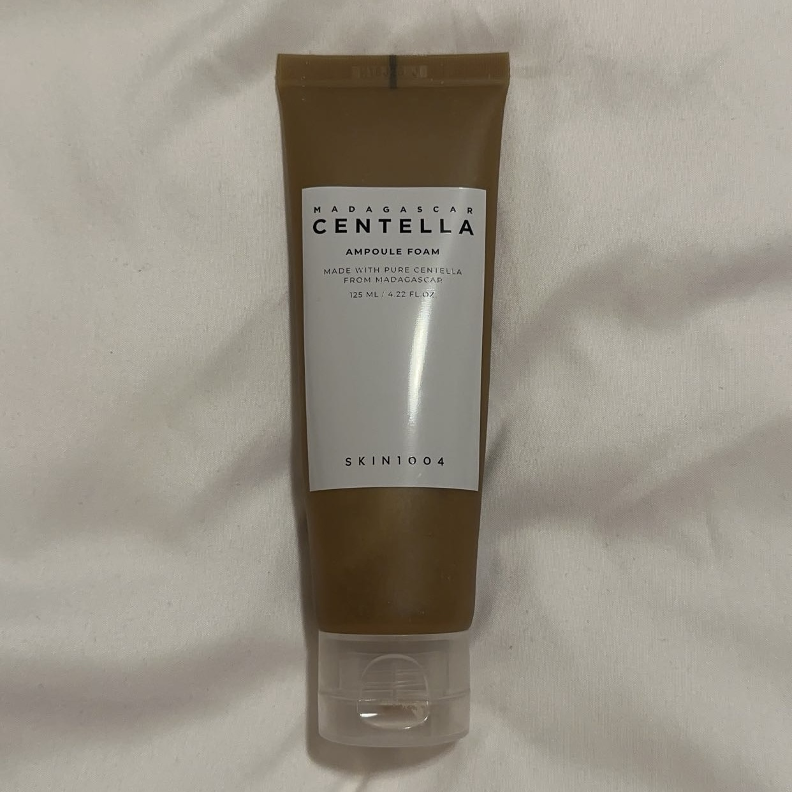
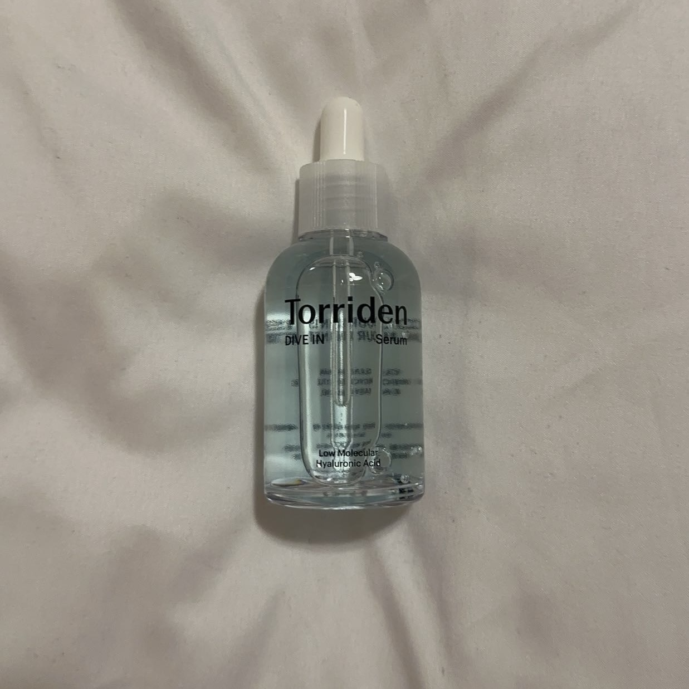
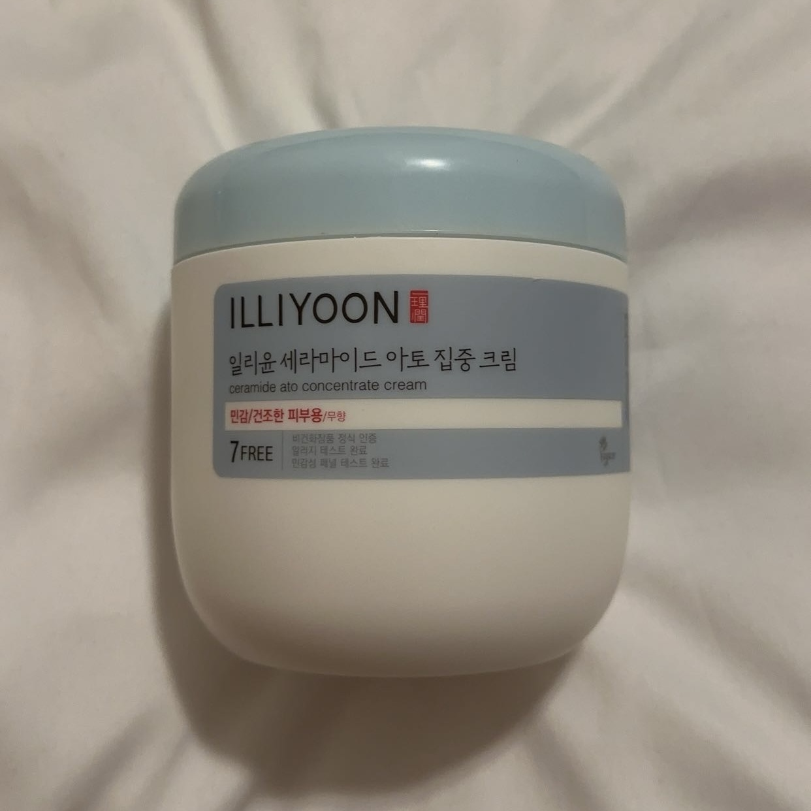

NOTE: What works for me may not work for you! Always do your own research into your skin type, skin needs, and the product ingredients!
Cleansers
Cleansing is the first step of any skincare routine. It removes any impurities, makeup, and oils to leave your face clean and ready to soak up the wonderful ingredients from the next steps of your routine.
Anua: Heartleaf Pore Control Cleansing Oil
- This cleansing oil is the best for removing stubborn blackheads and excess sebum. I used to struggle with blackheads in my nose, but I no longer have them! This oil also quickly removes all of my makeup, including waterproof mascara.
Skin1004: Centella Ampoule Foam
- 
- This cleanser leaves my skin refreshed and clean without feeling entirely dry stripped of moisture afterwards. Also, it has a pH level of 5, which is ideal for facial cleansers. This is definitely my daily go-to cleanser.
Toners
After cleansing, your skin will be stripped of moisture and natural oils. Toners are meant to prep your skin for the next products. They do this by either starting to add moisture back into your skin or exfoliating your skin.
Haruharu Wonder: Black Rice Hyaluronic Toner
- This is a simple toner meant for deep hydration from the hyaluronic acid. Additionally, the black rice extracts improve skin elasticity, and it adds an anti-inflammatory and brightening effect. Whenever my face feels dry, I always reach for this toner.
Skin1004: Probio-Cica Essence Toner
- This toner contains many beneficial ingredients. These include centella asiatica for soothing, probio-cica and TECA for calming, ceramide NP (similar to the ceramides found naturally in the skin) for skin barrier repair, and hyaluronic acid for hydration. This is my go-to toner when I have irritated skin.
Toner Pads
Toner pads are much like toners, but they are pads soaked in concentrated toner ingredients. They are used to further exfoliate your skin, or can even be used as a mini sheet mask by letting them rest on your face for a few minutes.
Needly: Daily Toner Pad

- With PHA and BHA (specifically salicylic acid), these toner pads help exfoliate the skin, reduce skin texture, and control sebum production. I find myself reaching for these a majority of the week to keep my skin smooth and free of excess sebum.
Mediheal: Madecassoside Blemish Pad
- With centella asiatica and madecassoside, these toner pads soothe skin and reduce the appearance of blemishes, especially from post-acne scars. These are definitely a holy grail product that use frequently to even out my skin tone.
Serums, Ampoules, & Essences
Serums, ampoules and essences are mainly concentrated ingredients meant for specific goals. Depending on the chosen ingredient, these three can hydrate, nourish, brighten, soothe, or even out skin texture.
Torriden: Dive-In Low Molecule Hyaluronic Acid Serum
- 
- With low molecule hyaluronic acids, this serum easily penetrates deep into the skin to provide intense and instant hydration. Additionally, this has ceramide NP, madecassoside, and panthenol to soothe and repair the skin. I use this serum daily in the morning and night.
Dr. Althea: Vitamin C Boosting Serum
- This serum contains vitamin C and niacinamide, both of which are great at brightening skin tone and dark spots. It also contains 8 types of hyaluronic acid, adding a hydration bonus. Vitamin C also boosts the effects of SPF, so I find myself using this most mornings to help protect my skin throughout the day.
Skin1004: Centella Ampoule
- Made of 100% pure centella asiatica extract, this ampoule is perfect for soothing irritated skin and damaged skin barriers. To prevent a damaged skin barrier, I use this product daily in both mornings and nights.
Cosrx: Advanced Snail 96 Mucin Power Essence
- With snail mucin, hyaluronate, panthenol, and allantoin, this essence is best for improving skin texture, intense hydration, and providing anti-aging effects. The thick formula helps to further lock in moisture, leaving your skin feeling nourished all day long. This is another product that I almost once daily in either the morning or night.
Mixsoon: Bean Essence
- With only 4 ingredients of fermented soybeans, fermented barley, fermented pomegranate, and fermented korean pear, this essence hydrates, smoothes, and moisturizes the skin. This is much like Cosrx's snail mucin essence, but it's vegan! For those who want vegan products, I highly recommend this product. I use this interchangeably with Cosrx's snail mucin essence.
Moisturizers
Moisturizers are meant to hydrate the skin and lock in moisture. While toners, serums, ampoules, and essences are not necessary steps, moisturizers are a crucial step for having plump and hydrated skin
Round Lab: 1025 Dokdo Cream
- This moisturizer has 3 hyaluronic acids and 4 ceramides, leading to intense hydration and a strong skin barrier. This is currently my favorite moisturizer because I feel like a little goes a long way. I barely have to use any product for my skin to feel nourished and moisturized.
Illiyoon: Ceramide Ato Concentrate Cream
- 
- Formulated with ceramides, this moisturizer is very good for repairing and protecting the skin barrier, and it also helps to deeply moisturize the skin. While the formula is very thick and rich, I don't find that it makes my oily areas too oily, so I highly recommend this for people with combination skin.
SPF
Sunscreens and SPFs are a necessity for protecting your skin from the sun's rays. Without SPF, you are more prone to skin cancer and premature aging!
Skin1004: Hyalu-Cica Water-fit Sun Serum SPF50+ PA++++
- While it blocks the sun's harmful rays, this sunscreen also has centella asiatica extract and hyaluronic acid to leave the skin feeling hydrated, moisturized, and dewy. This has been my favorite sunscreen for months, and I always recommend it because it is one of the more affordable options on the market.
Beauty of Joseon: Relief Sun: Rice + Probiotics (SPF50+ PA++++)
- With rice extract, this product protects the skin from the sun while providing moisture and calming effects. This was my very first sunscreen, and I always recommend it to beginners looking for a staple sunscreen.